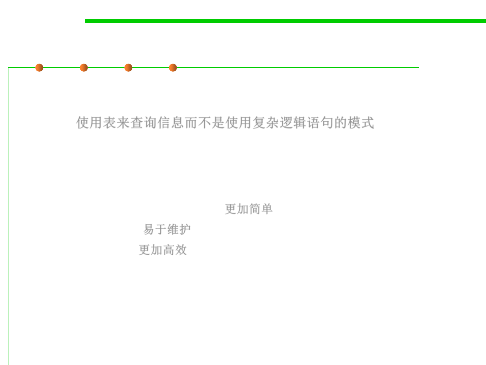

6.3 Maintainability-Oriented Construction Techniques
What is “Table-Driven”?
▪ A table-driven method is a schema that uses tables to look up
information rather than using logic statements (such as if and
case). 使用表来查询信息而不是使用复杂逻辑语句的模式
▪ In simple cases, it's quicker and easier to use logic statements, but
as the logic chain becomes more complex, table-driven code:
– Simpler than complicated logic 更加简单
– Easier to modify 易于维护
– More efficient 更加高效